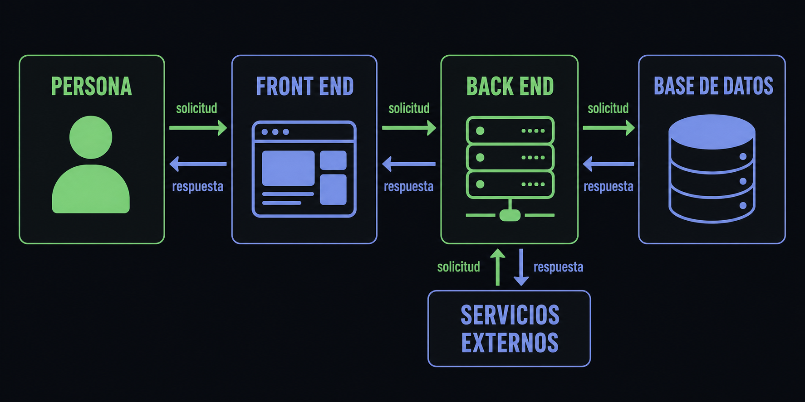
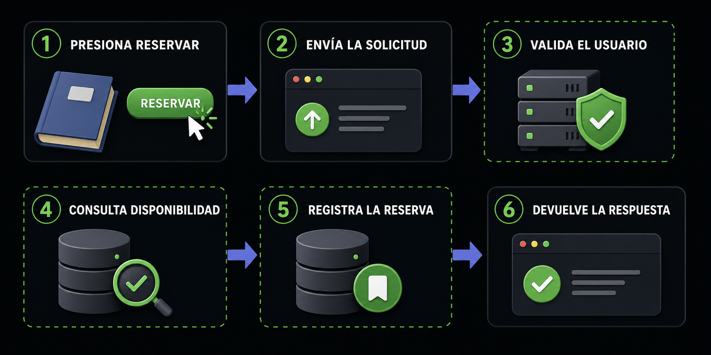
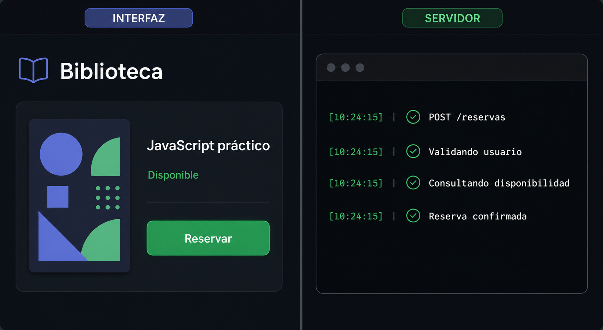

Las partes de una aplicación

Front end
Muestra información y recibe acciones.
Back end
Valida, aplica reglas y coordina operaciones.
Base de datos
Conserva información organizada.
Servicios externos
Resuelven pagos, correo, mapas u otras capacidades.
Reservar un libro, de punta a punta

- Recibir la solicitud
- Validar usuario y datos
- Consultar disponibilidad
- Aplicar la regla
- Registrar la reserva
- Responder el resultado
Solicitud y respuesta
SOLICITUD
{
"libroId": 42
}RESPUESTA
{
"ok": true,
"mensaje": "Reserva confirmada"
}
Clasificá responsabilidades
Mostrar un formulario
Presenta controles y mensajes.
Validar datos
Decide si la operación es aceptable.
Registrar una reserva
Conserva el cambio real.
Presentar la confirmación
Transforma la respuesta en una experiencia visible.
COMPROBACIÓN
0/4Puedo explicar el papel del back end
Marcá cada punto después de comprobarlo.